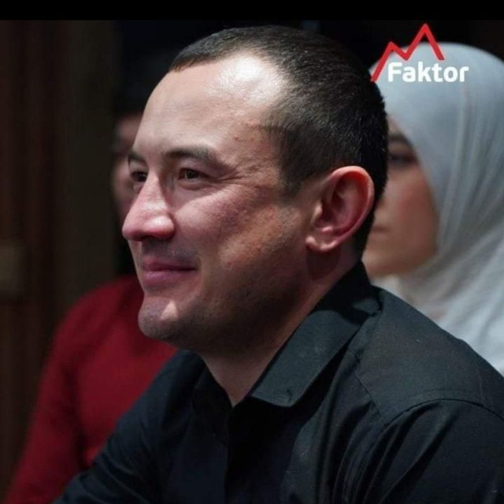

Yardamjon
Doktor-laborant
Farg‘ona, O‘zbekiston
15K+
Auditoriya
50+
Loyihalar
15+ Yil
Tajriba
Telegram
🔥 Eng Faol+998 90 292 2424 • Tezkor xabar yozish
Qo‘ng‘iroq qilish
📞 Qo‘ng‘iroq+998 90 292 2424 • To‘g‘ridan-to‘g‘ri aloqa
@yardamjonalijonov • Foydali tibbiy maslahatlar
yardamjonalijonov • Maqolalar va yangiliklar
Konsultatsiya & Qabul
Tezkor JavobLaboratoriya tahlillari va professional maslahat